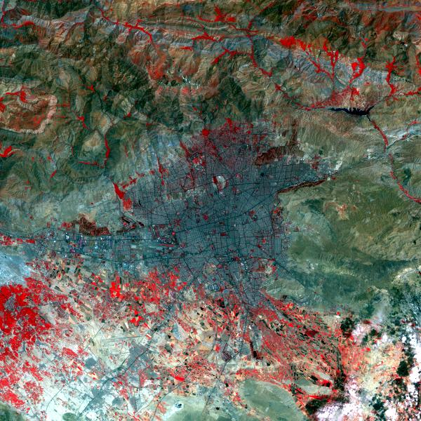
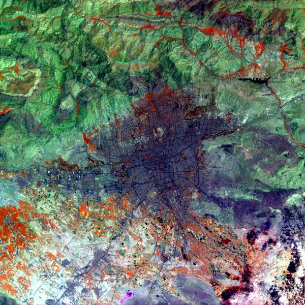

PrintableImageFilterExample.cxx¶
Most of the time, satellite images have more than three spectral bands. As we are only able to see three colors (red, green and blue), we have to find a way to represent these images using only three bands. This is called creating a color composition.
Of course, any color composition will not be able to render all the information available in the original image. As a consequence, sometimes, creating more than one color composition will be necessary.
If you want to obtain an image with natural colors, you have to match the wavelength captured by the satellite with those captured by your eye: thus matching the red band with the red color, etc.
Some satellites (SPOT 5 is an example) do not acquire all the visible spectral bands: the blue can be missing and replaced by some other wavelength of interest for a specific application. In these situations, another mapping has to be created. That’s why, the vegetation often appears in red in satellite images.
The band order in the image products can be also quite tricky. It could be in the wavelength order, as it is the case for Quickbird (1: Blue, 2: Green, 3: Red, 4: NIR), in this case, you have to be careful to reverse the order if you want a natural display. It could also be reverse to facilitate direct viewing, as for SPOT5 (1: NIR, 2: Red, 3: Green, 4: SWIR) but in this situations you have to be careful when you process the image.
|  |  |
On the left, a classic SPOT5 combination: XS3 in red, XS2 in green and XS1 in blue. On the right another composition: XS3 in red, XS4 in green and XS2 in blue.
Example usage:
./PrintableImageFilterExample Input/IMAGERY_SSECH.tif Output/PrintableExampleOutput1.jpg 1 2 3
Example usage:
./PrintableImageFilterExample Input/IMAGERY_SSECH.tif Output/PrintableExampleOutput2.jpg 1 4 2
Example source code (PrintableImageFilterExample.cxx):
#include "otbVectorImage.h"
#include "otbImageFileReader.h"
#include "otbImageFileWriter.h"
#include "otbPrintableImageFilter.h"
int main(int argc, char* argv[])
{
if (argc != 6)
{
std::cerr << "Usage: " << argv[0] << " <inputImageFile> ";
std::cerr << " <outputImageFile> <RedBand> <GreenBand> <BlueBand>" << std::endl;
return EXIT_FAILURE;
}
const char* inputFilename = argv[1];
const char* outputFilename = argv[2];
int redChannelNumber = atoi(argv[3]);
int greenChannelNumber = atoi(argv[4]);
int blueChannelNumber = atoi(argv[5]);
typedef double InputPixelType;
const unsigned int Dimension = 2;
typedef otb::VectorImage<InputPixelType, Dimension> InputImageType;
typedef otb::ImageFileReader<InputImageType> ReaderType;
ReaderType::Pointer reader = ReaderType::New();
reader->SetFileName(inputFilename);
// To easily convert the image to a printable format, i.e. 3 bands
// unsigned char value, you can use the PrintableImageFilter.
typedef otb::PrintableImageFilter<InputImageType> PrintableFilterType;
PrintableFilterType::Pointer printableImageFilter = PrintableFilterType::New();
printableImageFilter->SetInput(reader->GetOutput());
printableImageFilter->SetChannel(redChannelNumber);
printableImageFilter->SetChannel(greenChannelNumber);
printableImageFilter->SetChannel(blueChannelNumber);
// When you create the writer to plug at the output of the printableImageFilter
// you may want to use the direct type definition as it is a good way to avoid mismatch:
typedef PrintableFilterType::OutputImageType OutputImageType;
typedef otb::ImageFileWriter<OutputImageType> WriterType;
WriterType::Pointer writer = WriterType::New();
writer->SetFileName(outputFilename);
writer->SetInput(printableImageFilter->GetOutput());
writer->Update();
}